Фотогалерея
Про галерею
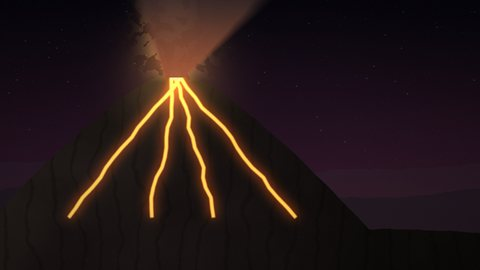
Дванадцять вулканічних сцен: нічні виверження, кальдери, фумароли й згаслі вулкани Закарпаття. Повнорозмірні кадри — 1920×1080, мініатюри — 480×270.Натисніть мініатюру — зображення відкриється у збільшеному вигляді (лайтбокс), гортайте стрілками ← → або клавіатурою. Посилання «Повний розмір» веде на окрему сторінку перегляду з кнопками «Назад» і «Вперед».
Мініатюри
| 01Нічне виверження стромболіанського типу | 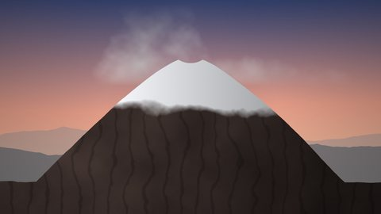 02Стратовулкан на світанку |
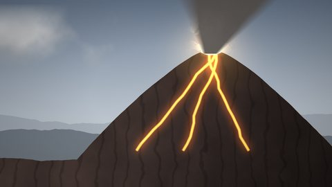 03Попелястий стовп над кратером |
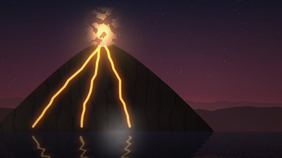 04Лавові потоки в океан |
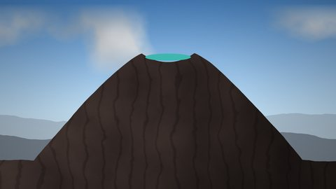 05Кальдера з бірюзовим озером |
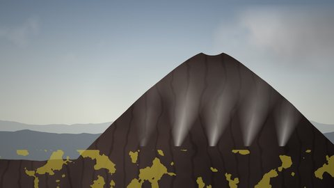 06Фумароли й сірчані поля |
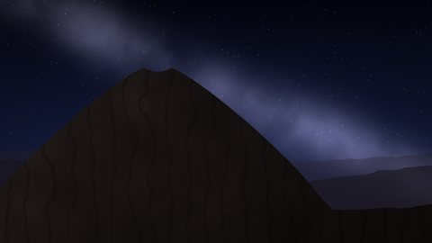 07Вулкан під Чумацьким Шляхом |
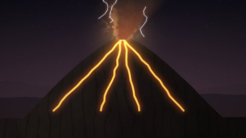 08Блискавки в хмарі попелу |
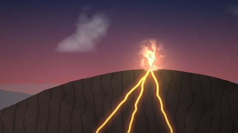 09Щитовий вулкан і лавове озеро |
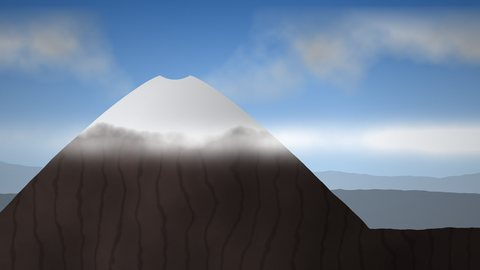 10Снігова шапка й хмари на схилі |
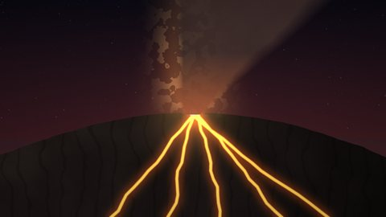 11Лавовий фонтан Гавайського типу |
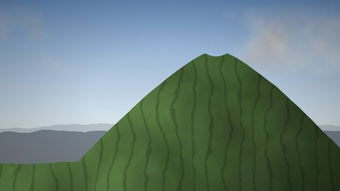 12Вигорлат-Гутинський хребет — давні вулкани Закарпаття |
Формат: JPEG, 1920×1080 (Full HD), до 400 КБ кожен файл; мініатюри 480×270. Усі зображення — власна процедурна графіка.